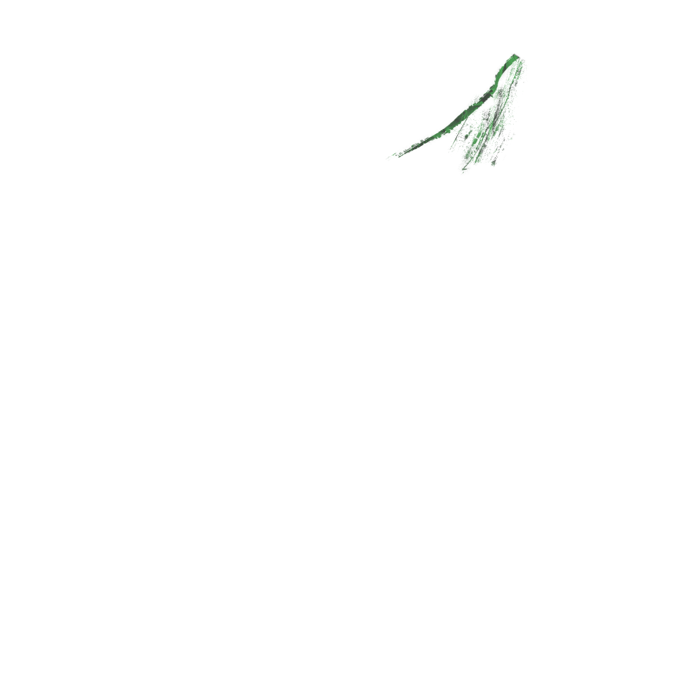

Irossun Mèjí
Ode o caçador de uma flecha só.
Osotokànsosó, o caçador de uma flecha só, estava lidando com suas artes e sua mãe veio lhe chamar...
Oduduwa, o rei de Ifé
está muito preocupado!
A colheita do inhame foi boa
mas ninguém ofereceu parte dela
às feiticeiras Ìyamì Osóróngà.
Elas enviaram um pássaro maligno para o reino
e nenhum dos caçadores que foram lá conseguiram caça-lo.
Fui até o babalaô e preparei a oferenda que ele recomendou
para que você acerte aquela ave!
Assim, Osotokànsosó partiu à caça do animal, confiando nas oferendas que sua mãe havia preparado.
Use o mouse e as setas para se movimentar.